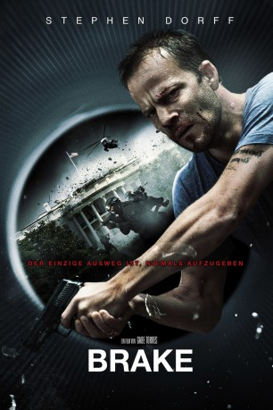

#3864 Brake
 
 IMDB-Wertung: 6.1 / 10
IMDB-Wertung: 6.1 / 10  Tomatometer: 44
Tomatometer: 44  Metascore: 0
Metascore: 0 
Secret Service Agent Jeremy Reins wird im Kofferraum eines fahrenden Wagens gefangengehalten. Terroristen wollen in auf diese Weise mental und physisch foltern, um dadurch Informationen aus ihm herauszubekommen, die sie für einen düsteren Komplott benötigen.
Jahr: 2012
Dauer: 91 Minuten
FSK: 16
Land: USA Studio: IFC in TheatersTonspuren: DTS - ,
Untertitel:
Auflösung: 1080p (1920x1080) Größe: 9246 MB
Genre: Thriller
Regisseur: Gabe Torres
Drehbuch: Stacey Menear
Soundtrack:
Darsteller:
 Stephen Dorff als Jeremy Reins
Stephen Dorff als Jeremy Reins- Chyler Leigh als Molly Reins
 JR Bourne als Henry Shaw
JR Bourne als Henry Shaw Tom Berenger als Ben Reynolds
Tom Berenger als Ben Reynolds Kali Rocha als 911 Operator
Kali Rocha als 911 Operator Pruitt Taylor Vince als Driver / Boss Terrorist
Pruitt Taylor Vince als Driver / Boss Terrorist Sammy Sheik als Marco
Sammy Sheik als Marco Kent Shocknek als News Anchor Jack Stern
Kent Shocknek als News Anchor Jack Stern Jaylen Moore als Training Agent Ahmadyar
Jaylen Moore als Training Agent Ahmadyar- Jason Raphael als Paramedic
- Jamie Fishback als Secret Service Training Agent , uncredited
- Michael Franklin als Secret Service Training Agent , uncredited
- Marisol Avery Rose als Secret Service Field Technician , uncredited
- Bobby Tomberlin als Trucker
 King Orba als Good Samaritan
King Orba als Good Samaritan- Stephen J. Bridgewater als Training Agent McClane
- Matthew Pollino als Training Agent Dipego
Datei: X:\2012(A-F)\Brake (2012, FSK16, 1920x1080).mkv seit 23.06.2016
Festplatte: HD 2012(A-M)
 Es gibt insgesamt 102 Filme in der Gruppe '2012(A-F)'
Es gibt insgesamt 102 Filme in der Gruppe '2012(A-F)'